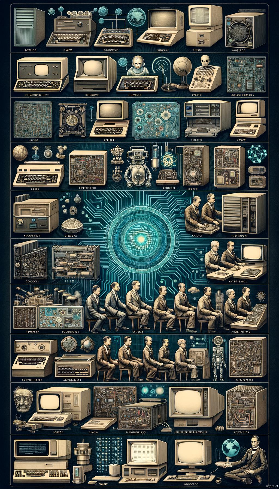

A história da Internet começa com a necessidade de comunicação mais rápida, que levou à invenção do telégrafo em 1844, usando ondas de rádio e fios elétricos. O sistema binário, fundamental para eletrônica e computadores, foi desenvolvido por Leibniz e Boole. O primeiro computador eletrônico, o ENIAC, foi criado em 1946, re-volucionando cálculos complexos. Nos anos 1960, a ARPANET, criada pelos EUA para fins militares e acadêmicos, mar-cou o início da rede de computadores. Em 1971, surgiu o primeiro vírus, e na década de 1970, o uso de e-mails começou a se popularizar. Em 1983, o protocolo TCP/IP foi adotado, padronizando a comunicação na Internet. O WWW, criado em 1989 por Tim Berners-Lee, trouxe o hipertexto, facilitando o acesso a conteúdos diversos com um clique. Na década de 1990, surgiram os primeiros navegadores como Netscape e Internet Explorer, e o Brasil começou a se conectar às redes internacionais, com o primeiro acesso na década de 1980. A partir de 1993, a Internet brasileira se expandiu para o público geral, com o crescimento de provedores e sites. O país também criou o CGI.br e passou a receber investimentos estrangeiros no setor. Nos anos 2000, a Internet se consolidou no Brasil, com maior inclusão digital, uso de sites governamentais e avanços em banda larga. Hoje, mais da metade da população brasileira acessa a Internet, com milhões de usuários usando a rede para diversas atividades, impulsionando o desenvolvimento social e econômico do país.
